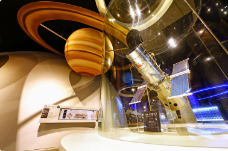
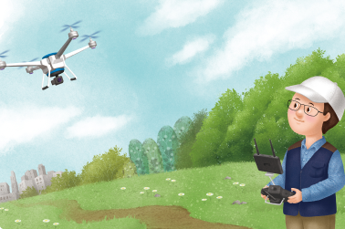
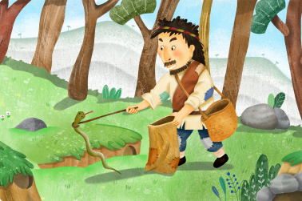
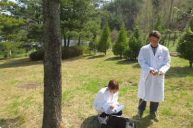
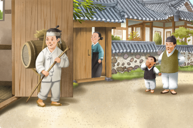
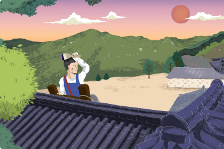
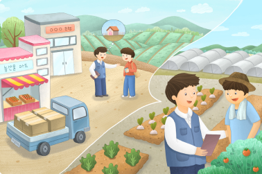
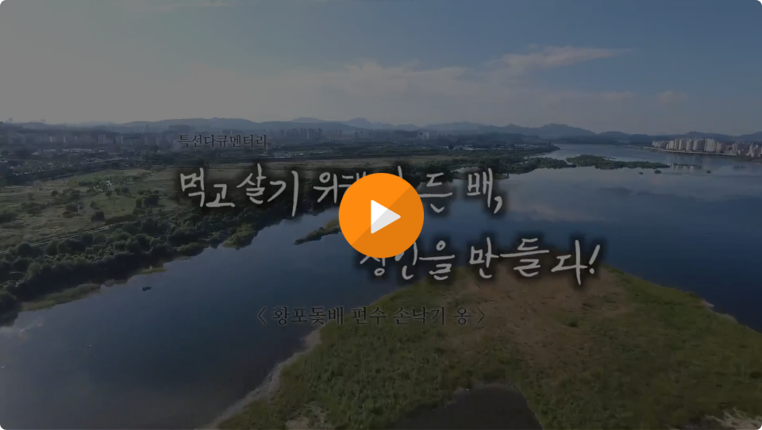

이색직업은 무엇일까? 우리는 보통 것과 색다른 것을 ‘이색(異色)’이라고 말한다. '직업(職業)'은 살아가기 위해 일상적으로 행하는 일이다.
그래서 이색직업이란 일반적이지 않은, 그리고 시대적 흐름에 따라 생겨나기도 사라지기도 하는 신비한 직업들을 의미한다.
과거·현재·미래의 이색직업을 통해 직업의 변천사를 확인하고, 각 이색직업에 얽힌 재미난 이야기들을 함께 살펴보도록 하자.
일자리 변동 요인
인구구조 및
노동인구 변화
저출산, 고령화, 1인 가구의 증가 등 거시적 인구구조 변화
생산가능인구 감소, 여성의 경제활동 증가, 외국인 근로자의 증가 등 국내 노동인구 변화

산업특성 및
산업구조 변화
산업구조의 고도화, 타 산업과의 융합 등 산업 육성을 위한 정부의 전략적 지원(공유경제, 핀테크 활성화 등)
과학기술 발전
4차 산업혁명에 따른 과학기술 발전, 예를 들면 로봇화와 자동화, IoT, 자율주행, AI, 빅데이터, 3D프린팅, 드론, IT발전, 기술의 융복합화 등
기후변화와 에너지 부족
환경요인(환경오염, 기후변화, 자연재해 등)과 에너지자원 요인(자원고갈, 국가 간 자원경쟁 등)으로 인한 (국제)규제 강화, 산업육성, 전문가 양성 등

가치관과
라이프 스타일 변화
사회의 복잡화, 개인화, 생활 수준의 질 향상 등으로 인한 건강, 미용, 여가에 대한 관심 증가 온라인상의 소통 증대 등
출처: 한국고용정보원 2021 한국직업전망
우주에서는 무슨 일을 할까?
하늘, 그 너머로!
관상수시(천문학자)
관상수시는 천체의 움직임을 통해 농경 생활에 필요한 절기(節氣)를 정하던 일을 의미한다. 관상수시는 예로부터 군주의 책무 중 하나로 꼽히던 것으로, 달과 별의 형태 및 위치를 통해 사계절의 주기를 계산하여 백성들이 농사를 짓고 풍년을 기원할 수 있게 한다. 마치 현대의 천문학자처럼 그 시대의 사람들은 별자리를 통해 하늘과 자연의 이야기를 읽어나갔다.
항공우주공학기술자
항공우주공학기술자는 공기 중을 비행하는 물체 즉, 여객기·전투기·우주선 등의 각종 비행물체를 설계하고 개발하는 일을 담당한다. 항공기의 본체 및 시스템 설계, 실험 연구를 통해 새로운 항공공학기술을 개발한다. 우주와 관련된 인공위성, 로켓 개발 등과 같은 프로젝트에 참여하며, 개발 관련 각종 장비를 연구하고 설계한다.
출처: 워크넷

자세히보기우주여행가이드
우주여행가이드는 지구의 행성 궤도를 새로운 여행지로 개척해서 사람들에게 우주를 안내한다. 우주는 수천 개의 위성과 우주 쓰레기들로 이루어진 지도와 같은데, 우주여행가이드는 이를 기반으로 흥미로운 관광코스를 기획한다. 또한 관광객에게 우주를 안내하면서 우주 속 버려진 우주선과 장비들의 위치를 찾아내는 이차적인 역할도 수행한다.
출처: 마이크로소프트 『2025년 직업 탐구 보고서』
자유로운 하늘을
인간이 활용하는 법
매사냥꾼
매사냥꾼을 매를 이용하여 사냥감을 잡는 일을 전문으로 하는 사람이다. 매사냥은 삼국시대 이전부터 우리나라에서 주로 겨울에 성행하였다. 매사냥을 위해서는 야생 매를 잡아서 훈련을 시키고 길을 들여야 한다. 길들인 매를 갖고 사냥을 하려면 털이꾼, 배군 등 최소 5～6명이 필요하다.
드론조종사
드론조종사는 ‘드론’이란 비행체를 지상에서 원격으로 조종하는 전문가다. 현재 드론은 군사 목적뿐만 아니라 정보기술이 발전하면서 그 쓰임이 다양화되고 있다. 드론조종사가 일하는 분야는 크게 군용, 기업, 촬영, 농업, 레저 등 5가지로 나눌 수 있다. 드론조종사에 대한 공공분야의 수요가 늘어나면서 드론 관련 학과나 교육과정이 대학에 개설되어 운영 중에 있다.

자세히보기기상컨설턴트
기상컨설턴트란 기상 정보를 토대로 기업 또는 개인에게 날씨 관련 정보 및 위험 관리 전략, 영향 분석 등 전문적인 상담이나 조언을 해 주는 직업이다. 지구온난화의 심화로 전세계적으로 기상 이변이 속출하고 있기 때문에 정확한 기상 예측의 필요가 더욱 커지고 있는 실정이다.
산속에 숨어있는 재밌는
직업들을 알아볼까요?
땅꾼
예로부터 보신이나 치료를 위해 뱀을 먹는 풍습이 있었다. 이런 뱀을 전문적으로 잡는 사람을 땅꾼이라 한다. 땅꾼들의 원조는 지금의 동대문에 있던 가산에 살던 거지로, 이들은 주로 지리산이나 설악산 등 명산에서 뱀을 잡았다. 예전에는 나무집게를 사용하여 뱀을 잡았으나, 지금은 포크레인을 이용해서 잡기도 한다.

자세히보기숲 해설가
숲 해설가는 지속 가능한 숲의 보전과 이용을 위해 노력하며, 자연과의 공생을 위한 생활양식과 가치관을 숲을 찾아오는 사람들에게 전파하는 직업이다. 숲의 생태, 수목분류, 산림과 환경, 곤충 등 숲이 가진 다양한 가치와 기능을 체계적으로 전달하여 올바른 산림문화 정립에 이바지한다.
출처: 한국숲해설가협회
나무치료사
나무치료사란 직업 이름 그대로 나무를 치료해주는 사람을 말한다. 나무치료사는 말을 하지 못하는 나무의 상태를 파악하고 치료해야 하기 때문에 성격적으로 꼼꼼하고 세심한 사람에게 적합하다. 또한 외부 출장이 많고 혼자서 작업을 해야 하는 경우가 많으므로 활동적인 성향의 사람이 유리하다.

자세히보기땅과 더불어 살아가는
우리의 삶
똥장수
도성에서 나오는 사람의 분뇨와 가축의 배설물을 전문적으로 처리하던 사람을 똥장수라고 한다. 박지원의 「예덕선생전」에 등장하는 엄 행수를 통해 더러운 똥이 돈이 되는 세상을 볼 수 있다. 당시 똥장수의 연봉은 한양에서 좋은 집을 살 수 있을 정도로 벌이가 괜찮았다. 20세기 초반까지 똥장수가 활동했다.

자세히보기전통가옥기술자
전통 한식 방법으로 우리의 전통 가옥인 한옥을 새로 짓거나 고치는 일을 하는 사람을 전통가옥기술자라고 한다. 과거 한옥은 전통문화유산으로만 인식되다가 2000년 이후로 한옥이 일반주거용으로 주목받으면서 전통가옥기술자의 수요 또한 달라졌다. 전통가옥기술자들은 주로 한옥을 시공하고 시행하는 전문 사업체를 운영하거나 해당 업체에서 일하는 형태로 활동하고 있다.
출처: 한국숲해설가협회

자세히보기귀농귀촌플래너
귀농귀촌플래너란 농촌 외의 지역에서 살던 사람들이 농촌에 정착하여 농사를 짓고자 할 때 이들이 농촌에 잘 정착할 수 있도록 상담 및 지원 서비스를 제공해주는 사람을 말한다. 귀농귀촌플래너는 지역에 있는 귀농귀촌지원센터나 사립 아카데미 등에서 교육과정을 이수하는 것으로 접근할 수 있다. 귀농귀촌플래너에게 요구되는 역량은 무엇보다도 농촌에 대한 이해이다.

자세히보기물이 들려주는
특이한 직업 이야기
월천꾼
조선 산천이 만든 직업 중의 하나가 월천꾼이다. 월천꾼은 사람들을 등에 업거나 목말을 태워 개울이나 여울을 건네주었다. 조선시대 여성은 외간 남자에게 벗은 발을 보여주는 것을 금기시했고, 양반 남성은 신발을 벗는 것을 달가워하지 않았다. 월천꾼은 오가는 길손을 등에 업고 물속을 건너야 했기에 키가 크고 힘이 센 사람들에게 적합한 직업이었다.
어류생태연구원
어류생태연구원은 각종 어류의 습성, 사료, 생태환경 등의 자료를 수집 및 분석한다. 수족관을 설치해 온도와 산소농도를 조절하여 알을 부화시키고 치어를 생산하여 사육실험을 실시한다. 이를 통해 어류의 질병에 대하여 연구하며 적절한 예방책과 치료약품의 안전농도에 대하여 실험한다.
출처: 한국직업사전
산업잠수사
산업잠수사는 해양자원 개발을 목적으로 각종 수중작업을 한다. 산업잠수사는 수중 교각 설치, 해난구조, 수중용접 및 절단 등 다양한 일을 수행한다. 지상에서도 하기 힘든 일이기 때문에 각종 기술에 대한 수중전문 지식은 필수이다.

한선 편수 (韓船 編首)
편수(編首)란 공장이나 작업장의 최고 우두머리를 뜻한다. 손낙기옹은 전통 한선(韓船)인 황포돛배 제작의 마지막 편수이다. 황포돛배란 누런 포를 돛에 달고 바람의 힘으로 물자를 수송하는 배를 의미한다. 600여년동안 황포돛배를 만들어온 장인의 배는 임진강과 남한강에 띄워져 있다.
영상출처: 황포돛배 편수 손낙기옹, 경기하남문화원